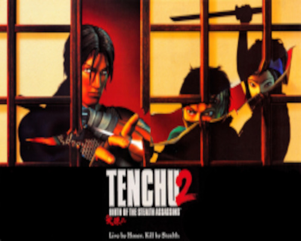
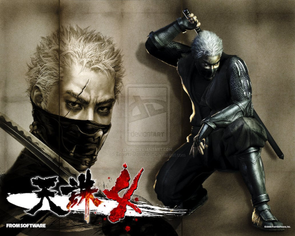
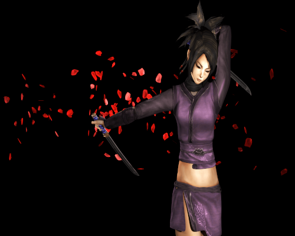
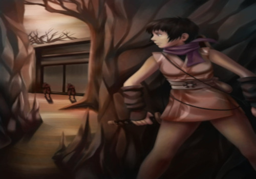

A série se passa no século XVI no Japão Feudal. A história original (Stealth Assassins) gira em torno de dois ninjas, Rikimaru e Ayame, que foram ambos membros do clã ninja Azuma desde a infância. Os dois ninjas servem ao Senhor Gohda e trabalham para ele como seus espiões secretos para acabar com a corrupção e recolha de informações em sua província. No entanto, o malvado feiticeiro demoníaco Lord Mei-Oh procura destruir Senhor Gohda, usando seu guerreiro demônio Onikage que causa estragos em toda província do Senhor Gohda. Apesar do Lord Mei-Oh ser morto no primeiro jogo, Onikage apareceu em todos os jogos seguintes (exceto o quarto titulo “Tenchu: Fatal Shadows”) torando-se o arqui-inimigo dos dois ninjas, especialmente de Rikimaru. Outro grande personagem que aparece com frequência é a Princesa Kiku, filha de Senhor Gohda de que muitas vezes é uma donzela em perigo.
- Início da história da família Azuma e sua linhagem:
A infância de Azuma Sensei, está envolta na maior parte em sigilo. Ele ainda é um segredo, quando exatamente ele nasceu ou onde ou a de quem. Azuma Sensei era mais do que provável ter nascido na família Azuma em torno do ano de 1.500 D.C. (a prologue em “Tenchu 2: Birth of the Stealth Assassins”, diz: "É a idade dos estados em guerra o velho Shogun caiu e senhores da guerra e samurais lutam contra batalhas selvagens para o direito de hastear a sua bandeira sobre os grandes castelos do Japão"). Em torno deste tempo, o shogunato mais precisas historicamente, foi a Ashikaga Shogunate que caiu em ou por volta do ano 1573. O fato de que o nome da família Azuma é compartilhada com a Aldeia Azuma. Poderia levar a alguma especulação de que o Azuma foram nomeados após a aldeia. Durante esse tempo, e mesmo antes, não era raro para famílias ou guerreiros individuais. Se samurai ou shinobi, a adotar o nome de uma vila ou cidade respeitada.
Uma representação da vida real disto é o histórico Togakure-ryu ninjutsu nomeado após Daisuke Togakure (Daisuke Nishina) que mudou seu nome após nascer na Vila Togakure. Quando exatamente a família Azuma estabeleceu o Azuma Shinobi-ryu (Azuma Escola de Ninjutsu) ainda é desconhecida. Mas vendo como Azuma Sensei nasceu na então bem estabelecida Azuma Shinobi-ryu. Praticamente mostra a linhagem de ninjutsu-ryu se estende ainda mais para trás. Como disse a Tatsumaru quando toda a tradição Azuma Shinobi-ryu foi passada para ele. "Esta é a espada ancestral Izayoi (lua cheia) o espírito do Azuma Ninja". Além disso, não era incomum para alguns ninjutsu-ryu estarem dentro de uma familia ninja que era no início uma família samurai. Mais uma vez a vida real Togakure-Ryu Ninpo, se a família Azuma começou como uma família samurai e evoluiu é desconhecida, mas improvável.
Esta declaração demonstra a Azuma-ryu existia ainda mais para além do início dos anos de 1.500. Mais do que provavelmente foi estabelecido no século XIV a algum tempo. O que se sabe é que este ninjutsu-ryu foi criada em um tempo de guerra generalizada, e através das gerações passadas as técnicas secretas e as tradições da Azuma-ryu. É foco principal foram baseados fortemente em métodos pouco ortodoxos de guerra, táticas de sobrevivência no campo de batalha, espionagem, sabotagem, assassinato, e, claro, o Stealth Assassins. Sendo uma escola estabelecida no Período Sengoku (guerra de estados), coloca firmemente o Azuma Shinobi-ryu como Koryu (escola tradicional / velho; sistemas Koryu de artes marciais são. O objetivo principal e ênfase de um sistema marcial koryu era para uso em guerra, mesmo na ausência de guerras contínuas sempre os testavam.) Isto pode ser visto através Azuma Sensei, seus alunos, e os alunos do curso Master of Shinobi Azuma-ryu.
- Grandmaster Azuma começa a treinar em Azuma Shinobi-ryu Ninjutsu:
Bem, em algum momento em sua juventude, ele começou seu treinamento duro rigoroso e longo prazo na Azuma Shinobi-ryu. O treinamento era feroz e mantida em segredo dentro da família Azuma e foi transmitida através kuden (transmissão verbal) a Azuma manteve poucos registros de sua existência nas operações militares e tradições. Desta forma, o Azuma Ninja permaneceu envolto em segredo. Como disse, o Azuma Shinobi-ryu foi desenvolvido principalmente para a guerra, a formação de Azuma Sensei focada em interpretações de várias artes. Algumas delas incluem Azuma-taijutsu, Azuma-jutaijutsu, corrida de longa distância, a sobrevivência debaixo d'água e de combate, consciência do campo de batalha, percebendo as intenções dos outros (embora não seja uma disciplina completa), em meados da sua adolescência, mais do que provável ele começou a estudar e treinamento nas armas especiais e técnicas secretas mais avançadas exclusivas para o Azuma Shinobi-ryu. Tais armas ou ferramentas estudadas foram as camuflagens discretas, pó de sono, técnica de invisibilidade, técnica camaleão, flechas explosivas, zarabatana, controle de sombra, finge a morte, Ninja Mind Control, Shinobi-irijutsu (Oculto e entrando), Gokui Atemi Sakkatsuho Zukai: Killing Secret Strikes Art, koppo-jutsu (quebra de osso), bem como boryaku (estratégia militar), Seishin Teki Kyoko (refinamento espiritual), e Zanshin: consciência mental clara.
Ele passou horas e horas de treinando vários estilos ao mesmo tempo. Sendo um sistema de métodos pouco ortodoxos de guerra, o Azuma Ninja treinou seus alunos de modos bem difíceis e rigorosos, a fim de condicioná-los para o campo de batalha exigente no mundo exterior em geral. Em torno deste tempo (período Sengoku, que foi iniciado pela Guerra Onin de 1.467 até 1.477 D.C.), o país do Japão foi um campo de batalha em grande escala devido a isso, e a família Azuma sobreviveu e continuou com as grandes guerras. O Azuma Shinobi-ryu foi baseada na pequena Vila Azuma, alto e profundo nas montanhas do pequeno país Gohda. Em algum momento da história da “Casa de Gohda” intermediado um acordo com o Clã Ninja Azuma para servir como espiões do país em troca da paz e respeitando seu sigilo e reclusão. O Azuma Ninja aceitou, vendo como eles têm servido a “Casa de Gohda” para as gerações através de rebeliões, guerra civil, e guerras externas. Azuma Sensei dominou o conhecimentos e as habilidades. Em sua juventude, foi especulado que possuía imenso potencial, e Shiunsais Sensei treinou e destinou a passar o Azuma ninjutsu-ryu as para próximas linhagens. Não se sabe quando ele inicialmente começou a treina-los, nem como ou quando seu antecessor renunciou ou faleceu.
- Mestre do Azuma Shinobi-Ryu:
Em algum momento de sua idade adulta, mais do que provável, o Mestre Ninja do Clã Azuma Ninja. Passou a tradição Azuma Shinobi-ryu para o novo Mestre, este foi Azuma Shiunsai, que liderou o clã a ele através da espada Izayoi. Tendo dominado completamente todos os aspectos, incluindo técnicas de combate, teoria e filosofia do Azuma Shinobi-ryu Mestre Shiunsai estava pronto para continuar a linhagem que tivesse existido e sobrevivido para as gerações, após o período Sengoku. Que tinha sido desenvolvido para a guerra e sobrevivência durante a guerra, foi uma verdadeira honra para Azuma Sensei, para segurar o honroso título de Mestre Ninja dentro de seu ninjutsu-ryu. Ele amava profundamente seu clã ryu.
Ao longo dos serviços dos Azuma Ninja no campo, Mestre Azuma Shinobi-ryu, Azuma Sensei finalmente começou a pensar em treinar e considerar seus próprios alunos. Azuma Sensei tinha realizado inúmeras missões para o pai Gohda Matsunoshins. Ex-chefe da “Casa de Gohda”, que governou o país de Gohda. Seu serviço ganhou-lhe elevados níveis de respeito honorário daqueles que o conheceram, lutou contra ele, e ouviu dele. Uma missão em meados da década de 1.550 D.C., Mestre Shiunsai assassinou um homem, sob as ordens da “Casa de Gohda”. Não se sabe o que este estado era, mas ele fez de facto e este homem tinha um filho chamado Tatsukichi. Azuma Sensei viu o menino e sabendo que suas ações deixaram sem uma família. Sentiu nele uma imensa quantidade de potencial, que poderiam ser adequadamente moldados sob o estudo, e tutela magistral de Azuma Shinobi-ryu Ninja Master Azuma Shiunsai.
Azuma Sensei levou o jovem Tatsukichi de volta com ele para a Vila Azuma. Tatsukichi era de idade, começou a sua rigorosa e tradicional formação ninjutsu Azuma. O menino viveu completamente para os ensinamentos de Sensei Azuma, altamente hábeis em dominar as técnicas, mais especificamente Azuma-taijutsu. Ele dominou em uma idade bem jovem e usado como sua principal forma de combate, mesmo quando confrontados com inimigos que usavam espadas. Tatsukichi também mostrou grande controle mental, que foi a segunda metade de sua formação. Azuma Sensei ao ver isso em um jovem de sua idade, novo que um dia ele iria passar toda a tradição Azuma Shinobi-ryu, juntamente com liderança do clã Azuma Ninja para seu aluno mais valorizada. Tatsukichi por volta da idade de 16 ou 17 anos foi introduzido no Clã Azuma Ninja e nomeado Tatsumaru.
Cerca de dois anos depois, Azuma Sensei recebeu ordens para assassinar um samurai particular. Juntamente com vários experiente Azuma Ninja eles infiltraram na casa de samurais e reivindicou sua vida. Durante a fuga, no entanto, eles foram descobertos por sua esposa e um empregado da família. O Azuma muito rapidamente silenciou os dois, quando se preparavam para silenciar a criança chorando sendo que se agarrou nos braços da mãe falecida, o Mestre Shiunsai os impediu de matar o bebé. Com pena do menino por deixá-lo em uma situação semelhante à Tatsukichi (Tatsumaru), Azuma Sensei levou-o para casa para a aldeia Azuma e criou como se fosse seu próprio filho. Mestre Shiunsai por já ter criado e treinado Tatsukichi (Tatsumaru), pensou e decidiu, quando o bebê alcançar a idade para ser treinado nas artes do Azuma Shinobi-ryu. Uma vez que o menino cresceu para a idade adequada, para realizar a formação Azuma ninjutsu rigorosa e exigente. Tornou-se evidente para Azuma Sensei que o menino pode ter sido muito fraco para suportar o treinamento. Sendo o campo de batalha endurecido, Azuma Sensei nomeou o menino Chikara para a força. Se era o seu nome, a inspiração de ver como dedicado seu sensei estava em seu crescimento e sucesso, ou se era taijutsu e jutaijutsu de sparring sessões diárias com Tatsukichi (Tatsumaru) que o levou a tornar-se mais forte.
No entanto Chikara cresceu para ser um menino muito forte dentro da Vila Azuma. Se ele tinha qualquer coisa que poderia ser encarado como uma lacuna, foi que não aprendeu novas técnicas tão rápido quanto os outros alunos. Mas Azuma Sensei o encorajava e orientava a sua formação a cada passo. Chikara desenvolvido em um espadachim oustanding, esforçando-se para ser tão bom ou melhor que Tatsukichi (Tatsumaru) ao seu nível de habilidade. Por volta de sua adolescência ele dominou um estilo Azuma-kenjutsu altamente não ortodoxo. Que enfatiza fortemente uma emocionante reverso da espada atrás das costas com o corpo e mão vazios centrado em uma posição baixa.
- Rikimaru suportando as fases do treinamento da Água Azuma e a nova prodígio Ayame:
Dentro do estilo avançado Azuma-kenjutsu, técnicas de movimento gracioso, contra-ataques, e evasão são ensinados. O estilo pode ser considerado um estilo suave-duro, um estilo que começa como um estilo fluido de recepção macio. Fugindo de ataques e contra-atacando ou bloqueando e desviando, então o aspecto duro e pressionando o ataque com pouco ou nenhum movimento desperdiçado. Expressa através de sua vida adulta e inúmeros duelos mais tarde. Na idade de 18, tornou-se membro Chikara totalmente empossado do Clã Azuma Ninja. Ganhando um novo nome e título Rikimaru um Ninja Azuma.
Anos mais tarde, depois de encontrar Chikara (Rikimaru), durante o período dos “Reinos Combatentes”. Azuma Sensei viajou para Kyoto, que não está longe de ser a Província Iga. Não precisa ter algo falado sobre este assunto, para estes dois ninjutsu-Koryu compartilhar algumas das mesmas ferramentas e o clã falado operava não muito longe fora de Kyoto. A vida da Familha Real Togakure-Ryu Ninjutsu foi reconhecido unicamente por empregar alguns tetsubishi, armas escondidas (conhecido na série Tenchu como caltrops), Shuko escalar garras, Senban Shuriken (o famoso quatro aonde aponta a estrela do jogo), e Shindake (um tubo de bambu usado para respiração subaquática e uma zarabatana). Todos estes são exclusivos para o Togakure-ryu, como seus segredos foram passados através de sua linhagem. Agora, com segredos como este que está sendo visto dentro da Azuma Shinobi-ryu pode assumir que o Togakure foram treinados, ensinados, ou teve uma grande influência sobre o Azuma Shinobi-ryu para os campos de batalha. Para tal conhecimento só teria sido fornecida por eles mais do que provável.
Enquanto em Kyoto ele viu como as guerras havia deixado a então pequena vila em ruínas. Ocasionado pela guerra os clãs de samurais lutavam pelo controle. Situando-se em uma margem do rio entre o que restava do campo de batalha recente. Mestre Shiunsai notou uma menina muito jovem assistindo os cadáveres de samurai caído e inocentes mortos flutuando. Azuma Sensei ficou intrigado com essa visão. A menina sabia seu nome, que era Omon, e sua idade 3 anos, mas isso era tudo. Depois de ter sido incapaz de encontrar seus pais, Mestre Shiunsai decidiu que não havia mais nada que pudesse fazer. Mas não podia suportar e deixá-la a cuidar de si mesma naquela idade. Mas o que ele poderia fazer ou ensinar a um jovem, sendo que ele já era um mestre endurecido e velho. Ele não poderia treinar somente a ela, o treinamento rigoroso do Azuma Shinobi-ryu seria muito difícil e exigente para ela. Ele não fazia parte dos treinos de suas escolas ou as outras maiores escolas de ensinamento de ninjutsu como os Iga-ryu ou Koka-ryu. O Azuma Shinobi-ryu era pequeno, mas não deve ser subestimada, eles simplesmente preferiram completo isolamento e recursos naturais para complementar sua existência e sigilo. Como um mestre Azuma, ele não sabia nada sobre os caminhos das emoções dos corações. O que ele poderia ensinar em artes kunoichi tradicionais ou sedução e hipnotismo. Com seus pensamentos de dúvida, ele decidiu que era hora de deixar a menina agarra e a usa manga e leva-la para Vila Azuma. Mas, naquele momento, sabia que a partir de alguns anos de experiência no campo de batalha, ele sentiu no potencial dela para suportar o treinamento.
Depois de trazer Omon a Vila Azuma, Azuma Sensei levantou a maneira como ele foi criado, e a única maneira que ele sabia como era a de um Azuma Ninja regular como Tatsukichi e Chikara antes dos 18 anos foram treinados. Com base em habilidades naturais e talentos, apesar de seu início atrasado Omon era mais provável que tinha muito talento comparado entre todos os três, mas também tinha uma atitude ruim. Que poderia ter reduzido um pouco de seu imenso potencial. Por exemplo, muito curiosa e disposta a aprender novas técnicas Azuma-ryu a pegou rapidamente. Ela era hábil em todas as artes colocados à sua frente, mas faltava a virtude muito necessária de paciência para compreender e dominar as sutilezas delicadas dentro das técnicas. Mesmo que ela possuí-se grande habilidade e conhecimento do Azuma Shinobi-ryu. Com isso dito, é difícil determinar verdadeiramente sem a sua atitude até que ponto ela realmente poderia ter se desenvolvido. Possivelmente superando Azuma Sensei ou mesmo Rikimaru e Tatsumaru, apesar de seu início atrasado Omon passou a missão de treinamento de iniciação com facilidade. Ganhando o nome Ayame e o título Azuma Ninja com a idade impressionante de 14, ainda mais jovem do que Tatsumaru. Extremamente alunos talentosos são apenas o resultado e reflexão do mestre que os ensina, treina e os orienta.
- Próxima geração do Azuma Ninja, Herda Azuma Shinobi-Ryu:
Cerca de 1573 D.C. em “Tenchu 2: Birth of the Assassins” durante o período dos Reinos Combatentes, o país de Gohda foi jogado em uma guerra civil por “Gohda Motohide”. Sentiu deveria ter sido ele declarado o titulo de Daimyo sobre a “Casa de Gohda”. Isso levou a guerra para o Azuma Ninja, sendo chamados mais uma vez. Mestre Shiunsai sabia de anos de experiência que o tempo para nomear seu sucessor chegou. Aparecendo a partir de uma porta giratória dentro de sua casa segurando a espada Izayoi na lua cheia do Azuma. Mestre Shiunsai explicou a situação para seus jovens alunos. Em seguida, anunciou a Tatsumaru quando entrega-se a a espada e junto com as histórias da Azuma Shinobi-ryu, Grão linhagens e Mestre Ninja do clã Azuma Ninja, Tornaria-se o Novo Mestre Ninja do Clã Ninja Azuma, dizendo: "O poderoso, deve saber quando passar ao longo de seus anos o seu poder. Como vocês três pós-graduados faram seus papéis, eu também farei o meu". Mais do que provavelmente ele atingiu o nível de Azuma Soke (Grão-Mestre). Mas também finalmente, ser capaz de ver como a sua formação e tutela rigorosa de seus alunos vai pagar. Agora que eles estão livres para deixar a aldeia e experimentar a verdadeira sobrevivência Azuma Ninja nas guerras que estão por todo o Japão.

- A Crise da “Queima / Queimada do Amanhecer”:
Após a morte do pai de Lord Gohda, a família Gohda foi dividido entre Gohda Matsunoshin, o herdeiro legítimo, e Gohda Motohide, tio de Matsunoshin. Uma rebelião eclodiu, e as forças de Motohide atacou o Castelo de Gohda. Em uma perda, para saber como responder, assessor de Gohda Sekiya Naotada solicitou o auxílio do Clã Ninja Azuma. Mestre Shiunsai despachou seu trio de estudantes, Rikimaru, Ayame, e Tatsumaru, para auxiliar seu senhor, mas não antes de passar a liderança do clã para Tatsumaru e dando-lhe a espada ancestral do Azuma, Izayoi.
No caos da batalha no castelo, Tatsumaru enviou Rikimaru para salvar Senhor Gohda. Rikimaru lutou por todo seu caminho através do castelo e se deparou com o duelo de Matsunoshin e Motohide. Ele mergulhou na luta, duelando com Motohide o derrubou. Enquanto se preparava para entregar o golpe mortal, Senhor Gohda ficou no caminho, e Rikimaru acidentalmente atingido o seu senhor. Motohide aproveitou a distração e fugiu do castelo. Ao longo do caminho ele raptou a filha de seu sobrinho, Princesa Kiku, e matou sua esposa, Lady Kei. Ayame enfurecida, testemunhou o assassinato covarde de Motohide de sua senhora, e provavelmente teria matado se sua atenção não fosse desviada por Genbu. Motohide seguindo, retirou-se para o campo de guerra do Senhor Toda, que tinha estabelecido uma base de operações próximas ao “Castelo de Gohda”. Motohide relatou que ele não tinha conseguido matar seu sobrinho, disse que feriu-o com a sua esgrima, mas que as forças de Matsunoshin foram enfraquecidas e dispersadas e que Toda Yoshisada iria ter pouca dificuldade em tomar o controle da terra do Gohda. Ao ouvir isso, Toda acenou para um dos seus homens, que puxou uma espada e feriu guarda-costas de Motohide por trás, ferindo-o mortalmente. Toda então, pessoalmente atingiu Motohide por baixo. Pouco antes de morrer, Toda disse que ele nunca teve a intenção de compartilhar o poder com ele. Motohide horrorizado morreu sabendo que tinha sido traído por si mesmo. Seu assassinato foi testemunhado por Ayame, que se referiu dizendo que "A morte adequada de um covarde". Rikimaru e o Senhor Gohda escaparam do castelo sitiado, Senhor Gohda foi informado de que seu inimigo, Lord Toda, estava atacando a partir do outro lado da fronteira.
- O Legado do Azuma Ninja Grão-Mestre Azuma Shiunsai:
Durante a “Grande Guerra” entre o país de Gohda. O grupo liderado pelo ex-ninja renegado Mestre Ninja Nyogetsu, Lady Kagami, atacaram a aldeia Azuma como punição por sua interferência. Tatsumaru, sofrendo de amnésia após um duelo anterior aonde foi liderado um ataque à aldeia. Suas ordens de missão era assassinar o Grandmaster Azuma, o Azuma Shiunsai. Silenciosamente eliminando a maioria do Azuma idosos, que bravamente lutaram e morreram para sua aldeia respeitada. Tatsumaru veio em cima de sua cabana mestres, entrando ele rapidamente incapacitou o Senhor Gohda e o Mestre Azuma. Mas não foi capaz de resistir a habilidade e a juventude do herdeiro do Azuma Shinobi-ryu. Em algum momento durante o duelo Tatsumaru chamou Izayoi em combate, a fim de manter-se com o mestre espadachim Azuma. Localizando uma abertura em sua técnica mestres, o shinobi altamente qualificados rapidamente enfiou a lâmina Izayoi no peito de seu antigo portador e Mestre Azuma, Shiunsai.
Rikimaru foi para o acampamento de Toda, com a intenção de despachar Toda. Quando ele chegou, no entanto, ele foi confrontado por Suzaku, um dos ninja de Toda. No momento em que seu duelo havia terminado, Rikimaru entrou no santuário de Toda, tanto Toda e Motohide já estavam mortos. Desenhada pelos sons da batalha, Rikimaru e Ayame encontraram a Princesa Kiku, apenas para descobrir que Tatsumaru se envolveu em combate com um kunoichi (Mulher Ninja). Antes que qualquer um dos Azuma mais jovem podem intervir, tanto Tatsumaru e seu inimigo caiu no mar.
- O Mestre Ninja morre:
Após este evento, enquanto estava para morrer, Mestre Shiunsai diz a Rikimaru que "O destino do clã Azuma está agora em suas mãos". Rikimaru e Ayame vão atrás de vingança para o Mestre Shiunsai e sua então quase extinto Clã Ninja Azuma na batalha no “Porto de Gohda”. Mas com a suas sobrevivências e reivindicando a Izayoi o Azuma Shinobi-ryu sobreviveu à guerra que quase provocou o fim a esta histórica Ninjutsu-Koryu. Sete anos se passaram e o Mestre Rikimaru e Ayame treinam duramente. Sem a experiencia do mestre Azuma anterior, a fim de ajudar a ensinar e treina-los as técnicas mais secretas do Azuma Shinobi-ryu. Eles aprenderam sozinhos, não foi fácil, por qualquer meio. Mas, através de sua dedicação inabalável, aquela que ele possuí desde a infância. Dominando todas as técnicas secretas do Azuma-ryu se tornando talvez o mais poderoso Mestre Ninja do clã já tinha visto. Ele também ensinou essas mesmas técnicas para Ayame. Para citar apenas algumas das técnicas mais secretas e poderosas, alguns são o Wrath of Heaven jutsu, Tengu Hide, Ninja Rebirth, jutsu worldwide / espaço de tempo técnica de manipulação, este último é encontrado em “Tenchu: Stealth Assassins”, juntamente com a capacidade de gerar e executar ataques relâmpago.
No rescaldo da rebelião, Rikimaru foi enviada para investigar o desaparecimento de aldeões na demônio da montanha. Chegando lá, silenciou o ninja e o seu líder, Kamadoma, que estavam lá. Seguindo uma pista de um dos moradores, ele descobriu um porto secreto onde os piratas chineses estavam tomando moradores de Gohda como escravos. Depois de matar os piratas e seu líder, Wang Xiaohai, Rikimaru foi atacado por um homem mascarado. Os dois lutaram brevemente, Rikimaru reconheceu a arma do estranho que parecia Izayoi. Quando o homem tirou a máscara, ele revelou ser Tatsumaru. Chamando a si mesmo de Seiryu, o Dragão Azul, “Senhor do Queima Amanhecer”, Tatsumaru foge, antes de Rikimaru pecar mais informações dele.
Rikimaru foi o próximo enviada para investigar um ataque a um templo da “Queimada do Alvorecer”. Matou todos em seu caminho até chegar no local de Noh do templo, ele mais uma vez encontrou Suzaku, mas Yukihotaru bloqueou seu caminho para Suzaku poder fugir antes que Rikimaru pode-se enfrentá-lo. Um pombo-correio trouxe a Rikimaru informações de que a Vila Azuma estava sob ataque, mas pelo tempo que levou para voltar, a maioria dos moradores haviam sido mortos. Na entrada da aldeia, Rikimaru avista de fora o mesmo ninja que havia lutado contra Tatsumaru, no acampamento de Toda. Ela se apresentou como Kagami, líder da Burning Dawn (Queimada do Alvorecer).
Rikimaru foi capaz de acabar com todos o ninja da “Queima do Alvorecer” em sua aldeia, mas mesmo quando ele matou o último deles, um grito angustiado ecoou pelo ar. Rikimaru retornou para a casa de Shiunsai, apenas para descobrir que Tatsumaru, com a espada Izayoi, de pé sobre o corpo ferido mortalmente de Shiunsai. Os dois Ninjas Azuma lutaram, e raiva de Rikimaru o levou a derrubar rapidamente Tatsumaru no chão e em pé prestes a entregar o golpe mortal. Nesta posição, no entanto, ele hesitou; suas paixões estavam em guerra uns com os outros, a raiva pela morte de Shiunsai contra amor fraternal para Tatsumaru. Tatsumaru aproveitou a hesitação de Rikimaru e golpeou-o com Izayoi, deixando uma ferida sangrenta em seu olho. Tatsumaru escapou com Kagami, e com seu último suspiro, Shiunsai ordenou Rikimaru para recuperar a espada e lutar sem paixão.
Perseguindo Tatsumaru com o auxílio de Semimaru, Rikimaru depara-se com Ayame. Embora ele prometa matar Tatsumaru, Ayame com raiva proibiu-o de fazê-lo, dizendo que ela mesma iria matar Tatsumaru. Erroneamente supondo que ela estava dizendo isso só porque ela mesma iria agir com altruísmo desapaixonada, Rikimaru concordou, e os dois ninja rastrearam Tatsumaru na “Caverna Kansen”. Depois de matar Byakko, o Tigre Branco e seu animal de estimação Chiro, ambos infiltrados na caverna e descobrem um navio de guerra de Kagami, o “Demônio do Fogo”. Eles também ouviram Kagami planejando lançar o navio e atacar o “Castelo de Gohda”. Ayame embarcou no demônio do fogo em segredo, enquanto Rikimaru voltou para informar o “Senhor Gohda” sobre o caso.
Chegando um pouco antes do navio, Rikimaru foi enviado para eliminar a “Queima do Amanhecer”. Ele rastejou de barco para barco no porto, matando os ninjas do alvorecer, antes de encontrar Suzaku mais uma vez. Os dois duelaram, e desta vez Rikimaru atingiu o seu inimigo mortalmente. Ele embarcou no “Demônio do Fogo” e matou muitos dos ninja lá dentro, até encontrar Ayame no convés dianteiro de um dos navios. Ela segurou Izayoi em sua mão, e Tatsumaru jazia morto a seus pés. Ayame jogou a espada ancestral para Rikimaru, que a pegou e partiu para derrotar o inimigo final.
Encontrou Lady Kagami numa lugar na popa central do navio. Depois de perceber que ela tinha sido descoberta por Ayame, Lady Kagami lança o “Demônio do Fogo” incompleto antes que uma força de defesa possa ser montada contra ela, e se dirige para a província de Gohda. As duas guerreiras duelaram, Kagami rapidamente jogando fora seu orgulho e atacando com sua espada longa. Embora a batalha tenha sido acirrada, Rikimaru também se infiltra no navio e limpa o seu caminho em direção ao convés, onde ele intervem e confronta Kagami na batalha, um memorável duelo, e desferindo um golpe fatal na Lady Kagami. E ao fazê-lo assumido plenamente o seu papel de dono da Azuma Ninja. Lady Kagami se depara com o corpo de Tatsumaru, que foi derrotado por Ayame. Apesar de sua reivindicação de ter dominado suas emoções, acabou se apaixonondo por Tatsumaru. Morreu por causa de seus ferimentos a bordo do “Demônio de Fogo”, Kagami se arrastou para o lado dele e disse a seu corpo sem vida que ele teria gostado de tê-la conhecida em outra vida, e morreu com ele em seus braços.
Rikimaru procurou Ayame pelo navio, mas não conseguiu encontrá-la, e com nenhuma outra escolha ele mergulhou fora e relatou sua vitória ao “Senhor Gohda”, que teve seus arqueiros disparando flechas flamejante para destruir o navio, aonde acertaram um local com explosivos, fazendo tudo ir para os ares. No dia seguinte à batalha, Rikimaru descobriu que Ayame tinha feito uma cova improvisada para Tatsumaru à beira-mar. Ele prometeu servir o “Senhor Gohda” no lugar de seu mestre Shiunsai e irmão de clã, Tatsumaru.
- Retorno de Rikimaru, Sete anos depois:
No rescaldo da Crise da “Queimada do Amanhecer”, Rikimaru tornou-se o Mestre Azuma do Clã Azuma Ninja. Neste período, moveu a vila para o “Castelo Gohda”, presumivelmente por uma série de razões (eles eram mais capazes de proteger Gohda se estiverem perto, e com tantas memórias assombrando o que restava da Vila Azuma, teria sido doloroso para Ayame e Rikimaru permanecer lá). Para os próximos sete anos, Rikimaru e Ayame treinaram constantemente, e suas habilidades melhoram para níveis ainda maiores do que haviam sido. Ayame amadureceu muito e melhorou suas habilidades. Seu estilo de luta é muito mais rápido e mais suave do que Rikimaru. Ela é dura, matando seus inimigos de sangue frio sem o sinal de qualquer dúvida ou hesitação, embora ela saiba como é os sentimentos amor, tristeza e desespero ela os deixa de lado. Seu sarcasmo é tão temida quanto suas lâminas afiadas.
Em uma das missões, Rikimaru é enviado para matar o comerciante Echigoya. Tendo alcançado uma grande riqueza quando seus concorrentes começaram a morrer. Echigoya expandiu-se para a proteção, agiotagens (Agiotas) e jogos. Há chances de que poderia subornar seu caminho para fora quando são presos. Depois de despachar o guarda de Echigoya, Rikimaru elimina o comerciante. Quando ele morre, o mesmo grita “meu dinheiro! O meu dinheiro!” como mais uma prova de sua corrupção.
Ao voltar da missão, Rikimaru pede para Ayame fazer um reconhecimento, onde uma vila começou a fazer planos para destruir o Senhor Gohda. Ayame tinha que roubar as cópias destes plano escrito. Sem o conhecimento dos planos, Senhor Gohda poderia enfrentar uma luta brutal. O inimigo, aparentemente, enviou os seus próprios guerreiros ninja para a aldeia fora do “Castelo de Gohda”. Ayame deve iludir ou executar os inimigos, a fim de entregar os planos para o seu senhor. Porém, ela é capturada e Rikimaru ao descobrir sai em busca da companheira do clã. Ele atravessou uma floresta e uma caverna perigosa a fim de encontrar Ayame. Ao encontra-la, Rikimaru teve de lutar contra o carcereiro bem armados e um urso. Após vence-los, um ninja místico aparece, este é Onikage e diz que ira destruir o Senhor Gohda e todos em seu caminho.
Em uma missão para o Senhor Gohda, Rikimaru se deparou com o guerreiro Onikage. Onikage fugiu, mas Rikimaru o encontrou várias vezes nos próximos dias, semanas e Todos os outros games da franquia. Finalmente, Onikage revelou que ele estava trabalhando para Lord Mei-oh, o Senhor do Submundo, um poderoso feiticeiro, e que a Princesa Kiku tinha sido raptado e levado para o submundo. Ambos Rikimaru e Ayame estabelecidos para resgatá-la.
Em um duelo feroz, Rikimaru finalmente matou Onikage e sem saber, derrubando Suzaku, um inimigo das antigas. Depois da lutas contra samurais esqueléticos e retorcidos com fogo, Rikimaru e Ayame descem em resgate a Princesa Kiku nos túneis subterrâneos, os Ninjas Azuma desceu ao próprio inferno. Finalmente, o ninja confronta o Senhor do Mal Mei-Oh em uma profunda caverna, onde Mei-Oh abriu um portal. Enquanto Ayame resgatava Princesa Kiku, Rikimaru luta e derrota Lord Mei-Oh. Enquanto eles corriam para escapar, um desmoronamento bloqueou seu caminho. Com o teto prestes a cair, Rikimaru utilizou a espada Izayoi, levantando a pedra que bloqueava o caminho, e ordenou Ayame a escapar de la com a Princesa Kiku e a espada Izayoi. As duas mulheres escaparam pelo túnel pouco antes das rochas enterra-las completamente. Ayame prensou a Izayoi no chão como um marcador para Rikimaru. Então, Ayame, Senhor Gohda e Princesa Kiku olhar para fora para o sol nascente esperando Rikimaru retornar.
- Ajudando Rin, Sombras Fattais:
Ayame já tinha perdido seus irmãos de clã, Tatsumaru e Rikimaru (até o momento nesta Historia, Riimaru não tinha sobrevivido no Tenchu 1), nos acontecimentos após a “Queima do Amanhecer” e a Batalha contra Lord Mei-oh. Um dia, em suas viagens, Ayame deparou-se com uma vila ninja dizimada. Ela esperava encontrar sobreviventes, mas chegou tarde demais. Os ninjas de Hagakure morreram sussurrando a palavra “Kuroya”. Como Ayame estava prestes a sair desta vila, uma jovem ninja chegou e ficou em seu caminho. O nome dela era Rin, ficou em formação, e enlouqueceu ao ver a vila em ruínas. Furiosa atacou e começou a lutar contra Ayame, e seus destinos para este capítulo se tornar "inextricavelmente interligados".
Rin é uma jovem kunoichi de Hagakure, virou uma Assassina Beniya que não aceita mentiras, e busca vingança por seus irmãos do Clã Hagakure. Ela descobriu que Futaba foi o responsável pelo massacre na sua aldeia. Rin foi consumida por uma raiva incontrolável no calor de sua fúria agredindo Futaba. Mas um shinobi nunca esquece a importância de venenos. Eventualmente, ela forma uma aliança com Ayame do Clã Ninja Azuma. A brava Rin garante momentos de riso no meio da matança. Ela tem o cabelo preto curto, veste traje vermelho e às vezes uma máscara de raposa, ela é comumente conhecido por usar sandálias. Ela empunha uma Ninjato de tamanho completo ou katana que ela mantém numa posição em sua parte traseira com a arma descansando em uma posição horizontal. Normalmente, a manutenção de uma mente focalizada calma quando as memórias ou informações relacionadas com os eventos da Vila Hagakure ela tende a perder um pouco o controle de suas emoções.
Futaba, um ex-ninja do Clã Hagakure, virou traidor, é responsável, juntamente com os assassinos Kuroya. De lá, Rin e Ayame vão em busca de vingança em nome do Hagakure. Durante sua jornada em busca de sangue, elas são oferecidas a chance de lutar como um Assassino do Beniya para "Senhora Razor" Ogin, uma lenda no submundo do crime japonês. Sendo bastante jovem encontrou todos geralmente assume que ela seja uma criança, deixando-a bastante irritado na maioria dos casos.
- Wrath of Heaven, a Ira dos Céus:
Em “Tenchu 3: Wrath of Heaven”, Rikimaru dominou uma habilidade final chamado “Wrath of Heaven”, onde ele pode matar instantaneamente qualquer inimigo com um golpe, mas criticamente danifica consideravelmente sua energia vital. Logo no início, Rikimaru tinha muitas das características que ele iria mostrar para o resto de sua vida, ele era totalmente leal ao país de Senhor Gohda, estoico, sério, disciplinado, e totalmente desprovida de um sentido de humor. Ele também era impetuoso, excesso de confiança, e conhecido por ceder a grande raiva em raras ocasiões. Estes últimos traços foram queimados fora dele depois do seu fracasso para matar Tatsumaru, e pelo tempo que ele matou Kagami ele tinha transcendido a um nível mais elevado de auto-controle espiritual. Devido às numerosas guerras Mestre Rikimaru tem silenciosamente lutaram na, essas experiências têm, sem dúvida, testou sua espiritual, físico, emocional e mental controle em toda a extensão. Bem como seu senso de dever para com a Azuma e o país de Gohda.
Embora não se destina a ser o Mestre Azuma Ninja aos 18 anos, Rikimaru tomou a liderança muito bem. Sua lealdade ao país de Gohda fez dele uma escolha extremamente confiável para empregar por espionagem contra os países vizinhos, e quando saiu com ninguém para comandar, ele tinha um talento especial para a determinação e liderança. E mais tarde na vida, em sua vida adulta, ensinando as técnicas Azuma a seus dois alunos, a próxima geração de Azuma.
Rikimaru geralmente usa uma máscara sobre a parte inferior do rosto (em seus vinte e tantos anos, talvez muito trinta e poucos anos, ele optou por usar uma máscara oni), embora ele raramente diminui-lo. Ele Azuma Mestre Rikimaru emitir ordens aos seus alunos tem uma cicatriz distintiva sobre o olho direito causado por lâmina Izayois, o resultado do combate com Tatsumaru. Ele se veste de cores escuras, geralmente marrom escuro ou preto, com tons de cinza. E tem o cabelo branco de neve muito incomum, com um porte atlético para seu físico.
Como líder do clã Azuma Ninja, Rikimaru firmemente segue a tradição e empunha a espada ancestral Izayoi. Em sua juventude, ele praticou um estilo pouco ortodoxo de kenjutsu, segurando a lâmina nas costas e levando com a mão oposta. Depois da guerra, com a "Queimada do Amanhecer", e sete anos de treinamento extenuante Ryu Azuma, ele adotou um estilo mais convencional de que prende sua Ninjato antes de seu corpo. De qualquer maneira ele é um mestre de ambos os estilos de espada.
Personagens:
Os principais personagens da série Tenchu são Rikimaru, Ayame, Rin, Tesshu e Tatsumaru.
Os personagens secundários relevantes da série Tenchu são Senhor Matsunoshin Gohda, Princesa Kiku, Lady Kei, Shiunsai Azuma, Lord Mei-Oh, Tenrai Mei-Oh, Motohide Gohda, Naotada Sekiya, Wang Xiaohai, Yukihotaru, Semimaru, Byakko o “Tigre Branco” e Chiro, Kagami, Jyuzou e Rinshi.
- Rikimaru: Atualmente Vivo. É um ninja alto de cabelos grisalhos com uma única Ninjato (Espada/Katana) chamado "Izayoi" e uma cicatriz sobre o olho direito. A cicatriz em seu olho direito foi o resultado de quando enfrentou Tatsumaru, após descobrir que Tatsumaru matou Shiunsai. Fisicamente mais forte do que Ayame e Rin, mas relativamente mais lento. Líder do clã Azuma e espião leal do Senhor Matsunoshin Gohda. Ele é um personagem fictício e é destaque em todos os jogos da série, sendo na maioria deles o mais utilizado. Antes dos 18 anos de idade, se chamava Chikara e após esta idade tornou-se membro totalmente empossado do Clã Azuma Ninja. Ganhando um novo nome e título Rikimaru um Ninja Azuma. Sua Primeira Aparição foi no game “Tenchu: Stealth Assassins” (para PlaySatation One).

Rikimaru foi filho de um samurai. Quando ele era apenas uma criança, Shiunsai foi pedido em uma missão a assassinar o pai de Rikimaru. Ele assim o fez, mas no caminho para fora da casa da família, o ninja Azuma se deparo com a mãe de Rikimaru e um servo. Os ninjas que estavam com ele, rapidamente matou a mulher e o servo, mas Shiunsai ficou nas suas mãos de matar a criança. Com pena do menino por deixá-lo em uma situação semelhante à Tatsukichi (Tatsumaru), Azuma Sensei levou-o para casa para a aldeia Azuma e criou como se fosse seu próprio filho e o tomou um estudante.
Inicialmente, o menino era um fracote. Shiunsai o motivou e treinou-o com força. Combinado com sessões diárias de brigar com seu irmão de clã, Tatsumaru, o menino magricelo e fracote transformou-se em um jovem talentoso e mortal. Na idade de 18 anos, Rikimaru foi feito um ninja Azuma.
- Ayame: Atualmente Viva. É uma kunoichi (Mulher Ninja) que usa roupas padrão ninja com sua barriga exposta. Ela carrega um par de kodachi (Espadas/Katanas pequenas de uma mão, normalmente usadas em par). é mais rápido e pode realizar mais combos que Rikimaru e Tesshu, mas é mais fraca do que eles. Ela é uma jovem prodígio assassina em uma histórica fantasia do século XVI do Japão Feudal, e foi adotada por um ninja mestre e cresceu junto com seu parceiro Rikimaru para servir o senhor de um clã local. Ela é uma das personagens principais em todos os jogos exceto de “Tenchu Z” para X-box 360. Sua Primeira Aparição foi no game “Tenchu: Stealth Assassins” (para PlaySatation One).

Situando-se em uma margem do rio entre o que restava do campo de batalha recente. Mestre Shiunsai notou uma menina muito jovem assistindo os cadáveres de samurai caído e inocentes mortos flutuando. Azuma Sensei ficou intrigado com essa visão. A menina sabia seu nome, que era Omon, e sua idade 3 anos, mas isso era tudo. Depois de trazer Omon a Vila Azuma, apesar de seu início atrasado nos treinos, Omon era mais provável que tinha muito talento comparado entre todos os três, mas também tinha uma atitude ruim. Com isso dito, é difícil determinar verdadeiramente sem a sua atitude até que ponto ela realmente poderia ter se desenvolvido. Possivelmente superando Azuma Sensei ou mesmo Rikimaru e Tatsumaru, apesar de seu início atrasado Omon passou a missão de treinamento de iniciação com facilidade. Ganhando o nome Ayame e o título Azuma Ninja com a idade impressionante de 14, ainda mais jovem do que Tatsumaru. Extremamente alunos talentosos são apenas o resultado e reflexão do mestre que os ensina, treina e os orienta.
- Rin: Atualmente viva. É uma jovem, em busca de vingança contra os responsáveis pela aniquilação e destruição do Hagakure Village. Uma kunoichi (Mulher Ninja) de cabelos morenos e curtos que carrega uma grande katana chamada “Natsume”. Não gosta de transportar muitas armas, ela prefere usar uma das mãos para outros tipos de ataques, Rin usa combos rápidos, como Ayame, porém é mais fraca do que Rikimaru e Tesshu. Sua Primeira Aparição foi no game “Tenchu: Stealth Assassins” (para PlaySatation One).

- Tesshu Fujioka: Atualmente Vivo. É um monge e doutor vigilante que usa roupas azuis e luta com um estilo “Bare-Handed” (de mão vazias, sem utilização de armas) finalizando na maioria das vezes com agulhas de acupuntura. Ele era um ex-membro do clã “Muzen”. Sendo o mais forte dos personagens principais, porem é o mais lento de todos. Sua Primeira Aparição foi no game “Tenchu: Wrath of Haven” para (PlayStation 2).
- Tatsumaru: Atualmente Falecido. Era um ninja altamente qualificado desde a infância por Azuma Shiunsai. Ele era o jovem aprendiz que foi treinado por Shiunsai, que sentia que este jovem era capaz de realizar as responsabilidades de um líder do clã. Em combate ele somente usa sua espada quando reconhece o adversário e acha-o digno de seu estilo de luta. Sua Primeira Aparição foi no game “Tenchu 2: Birth of the Stealth Assassins” (para PlaySatation One).
Sua Infância: Filho adotivo de Shiunsai Azuma. O Mestre Shiunsai assassinou um homem, sob as ordens da “Casa de Gohda”. Este homem tinha um filho chamado Tatsukichi. Azuma Sensei viu o menino e sabendo que suas ações deixaram sem uma família. Sentiu nele uma imensa quantidade de potencial, que poderiam ser adequadamente moldados sob o estudo, e tutela magistral de Azuma Shinobi-ryu Ninja Master Azuma Shiunsai. Azuma Sensei levou o jovem Tatsukichi de volta com ele para a Vila Azuma. Tatsukichi era de idade, começou a sua rigorosa e tradicional formação ninjutsu Azuma. O menino viveu completamente para os ensinamentos de Sensei Azuma, altamente hábeis em dominar as técnicas, mais especificamente Azuma-taijutsu. Ele dominou em uma idade bem jovem e usado como sua principal forma de combate, mesmo quando confrontados com inimigos que usavam espadas. Tatsukichi também mostrou grande controle mental, que foi a segunda metade de sua formação. Azuma Sensei ao ver isso em um jovem de sua idade, novo que um dia ele iria passar toda a tradição Azuma Shinobi-ryu, juntamente com liderança do clã Azuma Ninja para seu aluno mais valorizada. Tatsukichi por volta da idade de 16 ou 17 anos foi introduzido no Clã Azuma Ninja e nomeado Tatsumaru.
Tatsumaru possuía habilidade e habilidades em todos os aspectos dentro da arte de Ninjutsu, para técnicas mais específicas do Azuma Shinobi-ryu. Tatsumaru poderia facilmente ser visto como um mestre espadachim, mas na maioria das situações de combate acaba aplicando o Azuma-taijutsu, como pode ser visto a partir de sua posição de recepção descontraída, e batidas de mãos e chutes rápidos. Shiunsai o treinou duramente e condicionando-o para ser um verdadeiro “Líder”, com a intenção de um dia liderar o clã Azuma.
A Morte do Grande Mestre Shiunsai do Clã Azuma: Tatsumaru matou Shiunsai num impulso do clã Azuma usando a espada Izayoi que foi passada para ele. Rikimaru apareceu pouco depois e eles duelaram brevemente. Tatsumaru mostrou alguns sinais de remorso depois de matar o Shiunsai, que lhe ensinou tudo o que sabia sobre Ninjutsu. Rikimaru aproveitou sua distração e derrubou-o no chão, mas suas emoções nublavam seu julgamento e, sendo o ninja astuto que ele é, Tatsumaru alcançou Izayoi e em um movimento rápido antes que Rikimaru pudesse reagir, desenhou e balançou Izayoi cortando o lado direito de seu rosto e cicatrizou-o para o resto da vida. Tatsumaru escapou com Kagami e foram perseguidos por Ayame que o ajudou a recuperar sua memória, mas ele preferiu que ficaria com a “Burning Dawn”. Depois de lançar o Demônio de Tatsumaru no fogo declarado por ele escolheu ficar, porque amava Kagami e depois partiu. Matando todos a bordo, incluindo Gohda e o Samurai Jubei, Tatsumaru se envolveu com Ayame em um duelo um-a-um, uma batalha feroz que terminou em um empate, mas esfaqueou-se com a sua Izayoi como punição por seus crimes de traição. Mesmo assim ele ainda era um Ninja Azuma altamente respeitado, um ninja merecido e reconhecimento por seus atos valorosos, habilidades e deveres, tanto como um samurai fez. Ele morreu acreditando que um fim digno na mais alta consideração, mas o método era errado.
Revivido por Tenrai: Tatsumaru retornou em “Tenchu: Wrath of Heaven” depois de ser revivido por Tenrai para servir como seu servo, embora seja mais tarde revelado por Onikage que ele tinha total controle e, eventualmente, traído Tenrai para ajudar a Rikimaru e Ayame.
*Na história de Rikimaru ele aparece na parte do Templo de Buda, onde ele mata Ganda antes de atacar Rikimaru, após a sua batalha, ele revela o segredo para derrotar Tenrai que estava escondido em seu olho direito por seu antigo mestre. Tenrai intervém e fica irritado com sua traição e extingue uma vela que atua como um link para a sua vida e Tatsumaru cai no chão morto para desgosto de Rikimaru.
*Na história de Ayame, Tatsumaru impede que os samurais gêmeos Ukyo e Sakyo matem Ayame. Logo em seguida, ele afirma ter que mata-la, pois estava sobre controle de Tenrai. Quando Ayame fica com a posse de uma das três joias que procurava após atinge o Buda do templo e achava que Tatsumaru tinha sido revivido pelas mesmas. Tatsumaru avisa a ela que a próxima vez que eles se encontram, ele vai matá-la sem qualquer hesitação. Quando Ayame atinge a fortaleza de Tenrai ela encontra Tatsumaru bloqueando seu caminho, após lutarem, Ayame sai vitoriosa, Tatsumaru cai aos seus pés feridos, Ayame corre para seu lado dizendo-lhe para segurar enquanto ela vai atrás de Tenrai para mata-lo. Em seguida, aparece Tatsumaru morto por causa de seus ferimentos.
-No entanto, a mais duas histórias, a primeira revelada que enquanto ele e Rikimaru chegam para ajudar Ayame na batalha contra Tenrai, Tatsumaru ordens ambos, Rikimaru e Ayame, para escapar e decide reviver as memorias de seus pecados passados, saltando para o portal que Tenrai abriu para reviver Mei-Oh com uma caixa de explosivos.
-Na segunda história após desbloquear e jogar com Onikage no outro Castelo. Quando Ayame chega ao fim da fortaleza de Tenrai, Onikage vai aparecer reivindicando a lutar contra ela. Eles lutam e Ayame é a vencedora. Mas ela acaba quase mata, até que Tatsumaru aparece. Ele se funde com Onikage para salvar Ayame.
- Onikage: Seu paradeiro atual é desconhecido. Seu nome significa demônio da sombra (Oni = demônio) e (Kage = Sombra). É um servo das trevas que uma vez adorado Lord Mei-Oh, o Rei Demônio. Ele agora vive só para atormentar Rikimaru do Azuma Ninja. Sua Primeira Aparição foi no game “Tenchu: Stealth Assassins” (para PlaySatation One).
A Red Sparrow: Onikage foi um ninja que atendia pelo nome de Suzaku, o Sparrow Vermelho. Ele fingiu ser cego, vestindo uma venda preta, e serviu Lady Kagami como um Senhor da queima de Amanhecer. Ele assassinou seu Yukihotaru, depois de ter sido derrotado por Rikimaru no templo budista, afirmando que ele "não tinha amor por fraqueza, apenas o poder." Mais tarde Rikimaru o derrotou em um segundo grande navio antes que ele lutou contra Lady Kagami.
Servindo Lord Mei-Oh: Onikage insistia em vir para a Terra. Rikimaru lutou com ele durante este tempo, sem saber que ele e Suzaku eram a mesma pessoa. Onikage nunca revelou sua identidade anterior a ele por razões desconhecidas. Rikimaru matou tanto Onikage e Mei-Oh.
Trabalhando para Tenrai: Onikage foi trazido de volta à vida por um feiticeiro chamado Tenrai. Ele, então, serviu-lhe enquanto secretamente fazia planos para trazer de volta o seu verdadeiro mestre, Mei-Oh. Depois que Rikimaru matou Tenrai, Onikage informou o espírito de Mei-Oh que seu tempo para retornar estava nas suas mão.
A queima do Castelo de Gohda: três anos depois, retorna Onikage e assume a identidade de Naotada Sekiya, antigo conselheiro do Senhor Gohda. Visto por uma mulher chamada Rinshi, eles começam um elaborado plano para liderar o clã em uma guerra que está se formando. Isto eventualmente leva a Rikimaru ser marcado como traidor. Ele trancou todo o castelo e o queimou enquanto Rikimaru e Ayame foram levados a lugares diferentes.
Suas Habilidades: Onikage apela às forças das trevas, concedendo-lhe muitas habilidades arcanas. Em Tenchu: Stealth Assassins, e Tenchu: Wrath of Heaven, ele luta com as mãos nuas, usando Tae Kwon Do (chutes como rápidos e poderosos). Como o Red Sparrow no nascimento dos assassinos da discrição, ele usa o mesmo estilo de Tae Kwon Do combinados para uma espada Jian chinesa.
- Senhor Matsunoshin Gohda: Atualmente Vivo. É o Daimyo atual da Casa de Gohda. A família de Matsunoshin invocou os Ninjas do Clã Azuma por anos durante tempos de paz e guerras, e confiava sua vida a eles. Um jovem governante compassivo, contudo com um sábio Domínio de Gohda. Ele também é hábil na arte do Bushido, capaz de manejar a katana com graça e equilíbrio. Durante a guerra com a “Queima do Amanhecer”, ajudou a defender a aldeia Ninja Azuma. Dando uma alta segurança para realizarem operações não convencionais que afetam enormemente o curso da guerra que seu país frequentemente é forçado a enfrentar. Sua Primeira Aparição foi no game “Tenchu: Stealth Assassins” (para PlaySatation One).
Matsunoshin começou levando algum tempo depois da morte dos pais, durante o período dos estados guerreando. Como Daimyo Gohda-sama tem levado o seu país através da guerra e da paz, embora Gohda seja um país pequeno. Embora economicamente tenha sido muito facil pelo fato de que ele contém uma mina de ouro. O Senhor Gohda governa com a filosofia de “feliz é igual a uma atmosfera de paz e prosperidade”. Uma vez afirmando que seu tio Motohide, "Você esta errado tio, as pessoas são a alma desta terra". Em sua vida, Senhor Gohda foi casado e teve uma filha. Sua esposa Lady Kei Gohda e sua filha Princesa Kiku, porem ambas faleceram no período da Guerra de Estado. Mesmo após essa perda, o Senhor Gohda ainda valoriza o seu povo e sua segurança. Ajudando nesses períodos difíceis e intermináveis. Mas quando o seu país ou a estabilidade do seu povo é desafiada ou ameaçada, ele acaba sendo um samurai temível preparado para a guerra.
Após a queda do Tenrai, o Mestre do Clã Azuma informou que país vizinho, Tado, queria começar uma guerra. Quando isso foi confirmado o Senhor Gohda, sem hesitação, declarou guerra a seu inimigo vizinho. Quando o país de Ogawara declarou guerra a uma Kodachi desconhece, o Senhor Gohda autorizou a implantação de um Ninja Azuma para avisar o pequeno país.
- Princesa Kiku: Atualmente Falecida. Ela era a única filha de Matsunoshin Gohda, o Daimyo sobre o país de Gohda. Sua mãe era Lady Kei Gohda e sua meia-irmã era Ayame, Ninja do Clã Azuma. “Tenchu 2: Birth of the Stealth Assassins” (para PlaySatation One).
Infância: Princesa Kiku em sua juventude possuía muito entusiasmo e energia. Ela tinha sido raptada pelo seu próprio tio, Motohide Gohda, durante a rebelião civil, ele liderou contra seu sobrinho para o título de Daimyo. Ao tentar escapar, ele matou a mãe de Kiku que tentou protege-la com a sua própria vida. Kiku foi finalmente resgatado por Ayame que tinha se infiltrado no campo de guerra do Senhor Toda. Após a morte de sua mãe, seu pai a ajudou a se reerguer, por não conseguir se expressar por causa da perda que teve, ela encontrou conforto em Ayame olhando-a como uma irmã mais velha e modelo respeitosa. Mais tarde, em seus anos em algum lugar no início da adolescência Kiku tornou-se mais formal, calmo e focado. Reconhecendo que o povo do país de Gohda é tão importante para seu pai como ela é. No entanto, ela nunca mostra um sinal de ciúme para a nação. Em “Tenchu: Shadow Assassins”, perto do fim da rebelião de Sekiya Naotada, quando Rikimaru foi enquadrado, ela não afirma imediatamente de que ele era culpado. Mas ela mostrou bravura absoluta quando ela voluntariamente se sacrificou para assegurar a morte de Onikage. Kiku teria se tornado uma grande, sábia a governar compassivamente, muito semelhante ao seu pai. Mas sua morte é a realidade do período dos estados guerreando.
- Lady Kei Gohda: Atualmente Falecida. Era a esposa do Senhor Matsunoshin Gohda, e mãe da Princesa Kiku. Durante o choque da Casa de Gohda e a Casa de Toda, Lady Kei foi morta por seu cunhado, Motohide Gohda, ao proteger a Princesa Kiku de ser sequestrada. Sua Primeira Aparição foi no game “Tenchu 2: Birth of the Stealth Assassins” (para PlaySatation One).
- Shiunsai Azuma: Atualmente Falecida. É o Ex-Grão-Mestre de uma longa linhagem dentro do Clã Ninja Azuma. Todos os alunos do Mestre Shiunsais em algum momento detinha o título de Grão-Mestre Ninja do Azuma Shinobi-ryu, possivelmente fazendo esta honrosa ao Azuma Grandmaster o maior dos Azuma. Seus ensinamentos e filosofia de viver através do Azuma Shinobi-ryu atualmente ensinado por Rikimaru Sensei seu segundo aluno. Como vimos na Câmara da “Casa de Gohda” na guerra de Ogawara. Os estudantes de Rikimaru Sensei foram treinados e bem ensinadas mostrando que aprendeu bem os ensinamentos do Mestre Azuma. Mas como um verdadeiro Mestre Azuma Ninjutsu, garantiu a sobrevivência do Azuma Shinobi-ryu continuará para a próxima geração e mais além. "Você não deve ser governado por vingança ou a raiva quando você enfrentá-lo ou você irá falhar novamente". - Grandmaster Azuma Shiunsai.
Suas abilidades como o Ex-Grão-Mestre Ninja do clã Azuma, Shiunsai é inquestionavelmente muito hábil. Ele é o único que ensinou Rikimaru e Ayame, isso significa que ele é altamente qualificados na esgrima. Ele também ensinou a Tatsumaru o taijutsu, isso significa que ele é altamente qualificados nas artes marciais também, embora ele raramente os usava em combate. Sua Primeira Aparição foi no game “Tenchu 2: Birth of the Stealth Assassins” (para PlaySatation One).
- Lord Mei-Oh: Atualmente Falecido. É o vilão principal e chefe final do “Tenchu: Stealth Assassins”. Ele é o rei demônio e tem Onikage como braço direito. Ele também é referido como "O Senhor do Inferno". Mei-Oh possui imenso poder mágico e com a sua espada Shichishito, ele tem ataques poderosos. Ele é capaz de se teletransportar, embora apenas para curtas distâncias. Mei-Oh = monarca dark. Também é a palavra japonesa para Plutão, o deus do submundo na mitologia clássica. Ele compartilha seu nome com Grandmaster Mei-Oh, um personagem vilão da série Strider, e ambos compartilham similaridades. Sua Primeira Aparição foi no game “Tenchu: Stealth Assassins” (para PlaySatation One).
Sua Primeira menção como Mei-Oh, foi quando aolicitou para suas forças armadas sequestrarem a Princesa Kiku. Ele morre por Rikimaru (ou Ayame) no final da “Missão 10: libertar a princesa”.
Sua Segunda menção como Mei-Oh, foi em “Tenchu: Wrath of Heaven”, onde ele é mencionado por na história de Rikimaru na “Missão: encontrar a Espada Shichishito”, no entanto, Tenrai demonstra o poder que Mei-Oh pode oferecer, e usa-o para atacar Rikimaru, após uma intervenção de Ayame, ele reunir forças para matar Tenrai. Na história de Ayame, Tenrai se oferece ao espírito Mei-Oh, depois de ser derrotado, e absorve o seu poder e duas das jóias que ele havia coletado, mas Ayame ainda derrota e mata Tenrai.
Depois que Rikimaru derrotou Tenrai e a batalha termina, Onikage aparece e conversa com o espírito impaciente de Lord Mei-Oh afirmando que seu tempo para retornar finalmente chegou. Lord Mei-Oh não é mencionado no “Tenchu: Shadow Assassins”, mas a partir dos planos de Onikage deve ter arranjado, durante o falecimento de Tenari, uma maneira de trazer não só o Lorde, mas também todos do domínio de Gohda.
- Tenrai Mei-Oh: Atualmente Falecido. Era um poderoso feiticeiro que lidera um exército sob a filiação do Lord Mei-Oh. Demonstrado com uma gama de magias perigosas, parafusos da iluminação, picos de gelo, e teletransporte. Tenrai usa sua magia para trazer de volta vários personagens falecidos na série de Tenchu, mais notavelmente Onikage e Tatsumaru. Dependendo do personagem escolhido a história básica é alterada de forma significativa, mas ambos resultados em um confronto final com Tenrai em sua fortaleza terminam com sua morte nas mãos do jogador. Sua Primeira Aparição foi no game “Tenchu: Wrath of Heaven” (para PlaySatation 2).
-Na história de Rikimaru, Tenrai faz várias tentativas para recrutar Rikimaru para a sua causa, mantendo estreita observação sobre o Ninja Azuma enquanto os acontecimentos do jogo se desenrolar. Ele revive Onikage que luta com Rikimaru na “Caverna da Pedra Calcária” e na “Fortaleza Tenrai” revive Tatsumaru para matar Rikimaru. Tenrai ordens de um de seus homens para tomar a forma de Ayame e atacarem o Senhor Gohda, resultando em sua prisão para atrair Rikimaru para a “Floresta de Bambu” para servir como distração enquanto suas forças atacam o “Templo do Buda” sob o comando de Kagura e Ganda. Rikimaru chega e mata Kagura com Ganda ser morto por Tatsumaru, depois de uma curta batalha, Tatsumaru revela como derrotar Tenrai. Enfurecido por sua traição, Tenrai mata Tatsumaru por extinção de uma vela que representa a sua força de vida, Tenrai tenta recrutar Rikimaru mais uma vez antes de convidá-lo para vingar a morte de Tatsumaru atacando sua fortaleza. Rikimaru confronta Tenrai e fica chocado quando suas tentativas têm pouco efeito enquanto Tenrai absorve o poder de Mei-Oh para combater Rikimaru. Rikimaru fica cego e espancado pelo Tenrai, mas destranca o poder escondido atrás de seu olho direito revelado pelo Tatsumaru e luta novamente com Tenrai. Ayame vem em auxílio de Rikimaru. Depois de outra batalha, recupera sua espada dando-a para Rikimaru, assim ele obtem a força para matar Tenrai em uma última luta. No entanto, Rikimaru e Ressai devem corrigir a espada Izayoi com o poder do ferreiro que foi roubado, então o Ninja Azuma espeta-se e fica com uma pequena lesão, a fim de finalmente matar Tenrai.
-Na história de Ayame, o assistente de Tenrai depois de conseguir as três jóias mágicas que possuem grande poder, usando um assaltante desconhecido que ele recupere uma das jóias da primeira missão dos comerciantes Nasu e Echigoya. Um membro do seu exército, Hamada Konosuke, detém o Senhor Gohda como refém, buscando a “Jóia da Virtude”, mas ele é morto por Ayame forçando Tenrai para obter a posse de seu corpo e expressar seu desejo para as três jóias, levando Ayame para procurar os outros antes Tenrai. Eventualmente Tenrai ganha posse da segunda jóia forçando o Senhor Gohda para enviar Ayame à fortaleza de Tenrai através de uma entrada secreta na “Caverna de Calcário” para assassiná-lo. Ayame recebe um par de sinos da Princesa Kiku antes de sua missão, foi revelado mais tarde que foi trabalhada a partir da “Jóia da Virtude” com a finalidade de anular o poder das outras duas jóias e impedindo a sua utilização indevida. Ayame derrota Tenrai forçando-o a absorver o poder das jóias, mas para sua surpresa Ayame, ainda o derrota forçando-o a oferecer o seu corpo e alma ao Lord Mei-Oh através de um portal, então Tatsumaru e Rikimaru chegam para ajudar. Tatsumaru pula no portal com explosivos enquanto Ayame e Rikimaru fogem da fortaleza. Logo em seguida, Ayame luta contra Onikage no “Castelo de Amagai”, a existência de Tenrai desaparece das suas “Cavernas Fortaleza”.
Quando ele é derrotado por um personagem que o jogador escolhe, se torna mais poderoso e transforma-se em duas formas diferentes dependendo de quem o jogador está controlando. Na missão de Rikimaru Tenrai ganha uma aura escura em volta dele e luta com esferas de energia escura e um poderoso movimento de arremesso. Na missão de Ayame a forma Tenrai é mais demoníaca, usa mais ataques físicos ocasionalmente parando para emitir uma névoa verde venenosa.
- Motohide Gohda: Atualmente Falecido. Foi o tio traiçoeiro de Gohda Matsunoshin. Ele não tinha poderes era um ser humano e não possuía mágia. Ele era um espadachim medíocre, embora ele proclamou seu talento para ser melhor de todos, realmente só superado por seu sobrinho. Foi visto poder utilizar também arma. Sua Primeira Aparição foi no game “Tenchu 2: Birth of the Stealth Assassins” (para PlaySatation One).
Motohide era um traidor, um covarde e hipócrita. Ele sentiu-se superior aos outros, especialmente a os camponeses, e ele detestava a maneira delicada em que Matsunoshin lidava com eles. Não só atacou seu sobrinho, mas também matou a Lady Kei e sequestrou a Princesa Kiku. Quando o pai de Matsunoshin morreu, Motohide crendo que seria dado o controle do território Gohda, ficou furioso quando soube que o domínio tinha sido entregue ao seu sobrinho. Motohide então conspirou com Toda Yoshisada, o senhor de um domínio rival, para lançar um ataque contra o “Castelo Gohda” e matar seu sobrinho para formar uma aliança entre os dois territórios. Motohide reuniu seu exército e invadiu o castelo. Enquanto seus homens lutaram com os guardas de Matsunoshin, Motohide infiltrou-se no castelo e encontrou seu sobrinho no nível superior. Motohide revelou que sentiu que seu sobrinho não era forte o suficiente para governar a terra e a deixa-la segura, e que "os camponeses devem aprender o seu lugar". Os dois envolvidos em uma luta de espadas que terminou quando Matsunoshin desarmou seu tio e derrubou-o no chão. Senhor Gohda hesitou, muito compassivo não matou seu tio. Vendo isso, Motohide sacou uma pistola e disparou contra seu sobrinho no ombro. Ele chegou a seus pés e preparado para acabar com Matsunoshin, mas antes que pudesse alcançar, Rikimaru invadiu a sala e duelou com o traidor.
Duelo no país de Gohda, mais uma vez Motohide perdeu para um adversário superior, mas antes de Rikimaru matá-lo, Matsunohin entrou na frente da lâmina do ninja, dizendo que seu tio era equivocada. Motohide aproveitou a distração e fugiu do castelo. Ao longo do caminho ele raptou a filha de seu sobrinho, Princesa Kiku, e matou sua esposa, Lady Kei. Ayame enfurecida, testemunhou o assassinato covarde de Motohide de sua senhora, e provavelmente teria matado se sua atenção não fosse desviada por Genbu. Motohide seguindo, retirou-se para o campo de guerra do Senhor Toda, que tinha estabelecido uma base de operações próximas ao “Castelo de Gohda”. Motohide relatou que ele não tinha conseguido matar seu sobrinho, disse que feriu-o com a sua esgrima, mas que as forças de Matsunoshin foram enfraquecidas e dispersadas e que Toda Yoshisada iria ter pouca dificuldade em tomar o controle da terra do Gohda. Ao ouvir isso, Toda acenou para um dos seus homens, que puxou uma espada e feriu guarda-costas de Motohide por trás, ferindo-o mortalmente. Toda então, pessoalmente atingiu Motohide por baixo. Pouco antes de morrer, Toda disse que ele nunca teve a intenção de compartilhar o poder com ele. Motohide horrorizado morreu sabendo que tinha sido traído por si mesmo. Seu assassinato foi testemunhado por Ayame, que se referiu dissendo que "A morte adequada de um covarde".
- Naotada Sekiya: Atualmente Falecido. Foi do conselho e conselheiro de Gohda Matsunoshin por muitos anos. Sekiya aparece na maioria das séries de Tenchu, ajudando o Senhor Gohda para aconselhar em assuntos do país. Ele foi morto e mais tarde possuído por Onikage em “Tenchu: Shadow Assassins”. Sekiya contribuiu para defender a “Casa de Gohda” quando foi atacada pela “Casa de Toda”, ele tinha bastante habilidades de esgrima. Sua Primeira Aparição foi no game “Tenchu: Stealth Assassins” (para PlaySatation One).
- Wang Xiaohai: Atualmente Falecido. Foi um líder da Baolisung, um bando de piratas chineses, junto com seu pai, Wang Dahai. Xiaohai era um ser humano e não possuía poderes ou habilidades mágicas. Manteve-se em muito bom estado físico e era um mestre do kung fu. Ele lutou com as mãos nuas e utilizava socos e chutes poderosos. Ele usaria duas manoplas de aço em seus pulsos para se defender dos ataques inimigos. Sua Primeira Aparição foi no game “Tenchu 2: Birth of the Stealth Assassins” (para PlaySatation One).
O Baolisung aceitou um contrato a partir da “Queimada do Amanhecer” para seqüestrar moradores de vários bairros em toda a terra de Gohda, para usar como trabalho escravo na construção do demônio do fogo. Xiaohai utilizava um navio em um porto secreto sem nome para realizar as suas atividades, enquanto seu pai estabeleceu uma base de operações na ilha de Kubon. Depois de matar Kamadoma no “Demônio da Montanha”, Rikimaru teve a posse de um mapa que o levou para o porto. Sob o manto da escuridão, ele se infiltrou na área e começou silenciosamente matando muitos soldados Baolisung. Por fim, ele veio para o navio de Xiaohai e libertou as vítimas presas lá dentro, mas antes que pudesse escapar Xiaohai o confrontou e desafiou-o para uma luta. Xiaohai revelou-se um mestre do kung-fu e lutou com grande habilidade e força, mas suas habilidades eram insuficientes para derrotar o Ninja Azuma. Rikimaru deu-lhe um golpe mortal, e com seu último suspiro engasgou sangue, Xiaohai demonstrava muita repugnância por ter sido derrotado pelo o que ele considerava ser um "Bárbaro".
- Yukihotaru: Atualmente Falecida. Também conhecido como o “Ice Firefly”, foi uma kunoichi (Mulher Ninja) bonita e mortal que atingiu um nível de responsabilidade moderada dentro do ardente do alvorecer, e ela também era o amante de Suzaku. Yukihotaru era um humano comum e não tinha poderes mágicos. Sua principal arma de escolha foi um “tanto (facas pequenas)” que ela exercia com grande habilidade. Yukihotaru possuía um estilo muito simples de luta; ela preferia ficar muito perto de suas vítimas e golpeava com varias facadas e curtas fatias com sua faca. Ela também foi muito hábil com shurikens, e tinha a capacidade de lançar projéteis múltiplos de uma só vez. Yukihotaru é o chefe final na missão “The Temple of Dreams”. Sua Primeira Aparição foi no game “Tenchu 2: Birth of the Stealth Assassins” (para PlaySatation One).
A “Ice Firely” e seus soldados atacaram o “Templo dos Sonhos” no território Gohda e massacraram seus habitantes, em seguida, alegou como a sua própria terra. Ao saber disso, Shiunsai enviou Rikimaru para recuperar o templo sagrado e matar os ninjas invasoras. Rikimaru trasou lentamente seu caminho para o coração do templo, onde descobriu Suzaku esperando por ele. Antes dos dois começarem a lutar, Yukihotaru apareceu e ofereceu-se para matar Rikimaru para seu companheiro. Ela atacou e foi bastante habilidosa, mas Rikimaru, no entanto, superou ela. Gravemente ferida, ela rastejou-se para Suzaku e lhe pediu para abraçá-la, pois ela sabia que estava morrendo. Suzaku ao invés disso, brutalmente esfaqueou ela, afirmando que ele "Não tinha amor por fraqueza, apenas o poder". Ela, então, morreu em seus pés.
- Semimaru: Seu paradeiro atual é desconhecido. Ele é um cão ninja, Semimaru tem maior capacidade do que os cães médios nas áreas de busca e pathfinding. É um Cão Ninja Azuma, aonde membros do clã podem convoca-lo jogando um osso de cão. Sua Primeira Aparição foi no game “Tenchu: Stealth Assassins” (para PlaySatation One).
Mais tarde a aldeia Azuma tinha sido atacado pela “Queimada do Amanhecer”, Semimaru ajudou Rikimaru e Ayame a perseguir Tatsumaru. Enquanto na outra série, ele pode ser convocado por atirar um item de osso de cão para ajudar a matar o inimigo.
Em “Tenchu: Stealth Assassins”, Semimaru é usado para matar os inimigos com o osso de cão. Ele também aparece no “Greatest Hits” na introdução de “Tenchu: Stealth Assassins”. Rikimaru tem uma ligação especial com Semimaru como mostrado no “Tenchu 2: Birth of the Assassins” confome descrito nas discrição das missões posteriores. Mesmo Semimaru aparecendo com o pelo castanho escuro em “Tenchu: Stealth Assassins”, em “Tenchu 2: Birth of the Assassins” o pelo dele é castanho claro. Semimaru aparece no modo Multiplayer em “Tenchu: Wrath of Heaven”. Em “Tenchu Z”, Semimaru é usado para distrair os inimigos com o osso de cão.
- Byakko o Tigre Branco e Chiro: Atualmente Ambos Falecido. Byakko Foi um dos quatro Senhores da “Queimada do Amanhecer”. Chiro foi o animal de estimação e parceiro de Byakko o Tigre Branco, o animal lutou contra Ayame e Semimaru e perdeu a luta. Byakko era um humano comum e não tinha poderes mágicos. Embora fosse pequeno em tamanho, era um guerreiro muito capaz. Sua arma predileta era um "Tanmuchi' (um pequeno chicote ou vara), ele poderia chicotear de lado a lado com velocidade relâmpago, causando barras de agonia em suas vítimas. Ele também era extremamente arrogante. Byakko Sua Primeira Aparição foi no game “Tenchu 2: Birth of the Stealth Assassins” (para PlaySatation One). E Chiro Sua Primeira Aparição foi no game “Tenchu: Stealth Assassins” (para PlaySatation One).
Apesar de ser um anão, Byakko alcançou a patente de um mestre ninja e foi selecionado por Lady Kagami como um de seus administradores na “Queimada do Amanhecer”. Byakko mantinha um tigre branco chamado Chiro tanto como um animal de estimação e uma arma de matar. Depois que Tatsumaru e Kagami destruiram a aldeia Azuma, fugiram para uma floresta de bambu e foram para a “Caverna Kansen”, para supervisionar a conclusão do demônio do fogo. Sentindo-se confiante de que Rikimaru e Ayame iria segui-los, Lady Kagami instruiu Byakko para lidar com eles quando eles chegasem. O Tigre Branco postou-se fora da entrada da caverna e preparado para a batalha, e não tinha muito tempo para esperar. Os dois Ninjas Azuma logo chegou, e Byakko instruíu Chiro a lidar com Ayame, enquanto ele próprio se envolveria com Rikimaru em combate. Ele lutou bem, ferindo Rikimaru, mas ainda assim perdeu. E Chiro foi derrotado na batalha contra Ayame e Semimaru.
- Lady Kagami: Atualmente Falecida. Foi a ex-líder do Clã Ninja Nyogetsu e da “Queima do Amanhecer”, onde seus ideiais eram criar um mundo onde ninjas poderiam ser livre e não ficarem sob as regras de proprietários nobres.Apesar de seu comportamento aparentemente frio que era incapaz de compaixão. Sua única razão para a criação da “Queima do Amanhecer”, foi para salvar seu tipo de servidão a famílias nobres, que os viram como dispensáveis e que lhes permitam forjar seus próprios destinos. Apesar de sua reivindicação de ter dominado suas emoções, acabou se apaixonondo por Tatsumaru. Kagami era um mestre ninja e possuía habilidades excepcionais de batalha. Durante seu serviço a o Lord Toda ela subiu para o posto de comandante do Clã Ninja Nyogetsu, e após a morte do Lord Toda ela reorganizou o Nyogetsu para a “Queima do Amanhecer”. Ela era uma estrategista brilhante e tinha uma mente capaz de formular planos dentro de outros planos. Kagami era uma pessoa persuasiva e carismática. Ela também inspirou uma grande quantidade de lealdade em seus seguidores. Sua Primeira Aparição foi no game “Tenchu 2: Birth of the Stealth Assassins” (para PlaySatation One).
Ela era um feroz oponente no campo de batalha. Diferentemente da maioria dos ninja, que favoreceram o Ninjato, Kagami usou o Odachi, uma katana extremamente longa e curva, como sua principal arma. Apesar do seu peso considerável ela dominou totalmente a espada, e a utilizava com efeitos devastadores. Tais eram suas habilidades com espadas que ela desarmou Rikimaru com um único golpe durante seu confronto inicial na Aldeia Azuma. Ela também era incrivel com shurikens, e durante a batalha final, a “Bordo do Demônio do Fogo”, ela provou ser uma lutadora inestimável. Seu lado mais gentil foi exibido quando ela nomeou o gigantesco e mentalmente deficientes Ninja Genbu como um dos quatro “Lords of the Burning Dawn (Lords da Queimada do Amanhecer)”. Kagami o tratou com respeito e deu-lhe uma posição de grande responsabilidade.
Ela aparece pela primeira vez durante o ataque ao “Castelo de Gohda”, onde ela ajudou na rebelião e mais tarde apareceu no acampamento do Senhor Toda, traindo seu senhor. Depois que Senhor Toda fica mortalmente ferido por Tatsumaru, ela decapita o Lord Toda, em seguida, leva a cabeça para um penhasco e o queima como um sinal para os seus ninja matarem os homens do Senhor Toda e do nascimento da “Queimada do Amanhecer”. Tatsumaru segue Kagami no sentido do penhasco e eles lutam, como os outros Ninja Azuma chegam mais tarde, eles assistem com horror quando o precipício se desintegra e ambos caem no mar, presumindo que ambos morream afogados.
No entanto, é revelado que ela sobreviveu junto com Tatsumaru, mas ele perdeu sua memória devido à queda. Lady Kagami arrasta-o a terra para a “Caverna Kansen” e usa esta oportunidade para recrutar Tatsumaru como o “Senhor da Queima do Amanhecer”, “Blue Dragon”, substituindo Seiryu que foi morto durante o ataque ao “Castelo de Gohda”. Kagami mostra um navio de guerra massivo, o “Demônio do Fogo”, que ela planeja usar para desafiar aqueles que se opõem a ela. O navio contém armadura e armamento suficiente para desafiar o melhor samurai, e ela planeja usá-lo para tornar o seu sonho em realidade.
A construção do “Demônio do Fogo” tinha ficado incompleto, de modo que Kagami acabou enviando seus “Senhores da Queimada do Amanhecer” para sequestrar moradores da província de Gohda, enquanto tais como Kamadoma no “Demônio da Montanha”, teve operações similares. Kagami também contratou a ajuda do chinês Baliosung Gang para sequestrar mais aldeões e mantê-los em uma pequena fortaleza em uma ilha. Eventualmente, estas acções foram descobertos por Gohda, resultando em Rikimaru matando Kamadoma no “Demônio da Montanha”, poupando os aldeões e descobrir o porto secreto de Kagami onde ela estava transportando escravos.
Enquanto isso, Ayame seguido para Ilha Kubon e matoando Wang Xiaohai e o resto do seu bando Baliosung, libertando os prisioneiros. Irritada, Kagami planejava um ataque à vila do Clã Ninja Azuma e enviou Suzaku, o “Sparrow Vermelho”, para distrair Rikimaru, atacando um “Templo Budista”. Enquanto isso, ela enviou Tatsumaru para atacar a aldeia secreta de quarentena onde Ayame foi posteriormente enviado para defender. Com todos os Ninjas Azuma ausente, Lady Kagami e Tatsumaru atacaram a aldeia ninja com vários golpes ninjas matando todos pela frente.
Kagami testemunhou Tatsumaru ferir Senhor Gohda e matar seu antigo mestre Shiunsai, assim que Rikimaru voltou, lutou contra Tatsumaru. Após vercer Tatsumaru na batalha, ele não conseguiu transmitir o seu conselho e exitou em matá-lo, dando a Lady Kagami oportunidade de desarmá-lo, permitindo que ambos fugissem passando por Ayame e indo para a “Caverna Kansen”.
Um romance começou a desenvolver-se entre Tatsumaru e Lady Kagami, quando sua visão começa a tomar forma. Eles fogem em direção ao “Cherry Tree Hill”, onde Kagami começa a mostrar seus sentimentos em relação a Tatsumaru. Ela trata os ferimentos de Tatsumaru. Enquanto isso Ayame, que tinham os seguido até o “Cherry Tree Hill”, confronta Kagami provocando-a a lutar, mas ela é acalmada por Tatsumaru, que a faz lembrar do sonho, fazendo-a sentir-se envergonhada por sua explosão. Kagami deixa o lugar para começar a preparação de seus planos e deixa Tatsumaru para acabar com Ayame.
Mais tarde, o Rikimaru encontra Lady Kagami e Tatsumaru no esconderijo da “Queimado do Amanhecer”, descobrindo seus planos para usar o “Demônio do Fogo” para liderar uma frota contra o “Castelo de Gohda”. Ayame sobe a bordo enquanto Rikimaru retorna ao “Castelo de Gohda” para informar o Senhor Gohda dos acontecimentos e o que tinha sido descoberto. Depois de perceber que ela tinha sido descoberta por Ayame, Lady Kagami lança o “Demônio do Fogo” incompleto antes que uma força de defesa possa ser montada contra ela, e se dirige para a província de Gohda.
Rikimaru também se infiltra no navio e limpa o seu caminho em direção ao convés, onde ele confronta Lady Kagami. Ela expressa suas esperanças e sonhos para todos os ninjas e como ela não vai deixar qualquer impedir seus planos de se tornarem realidade, começa uma batalha feroz, terminando com Rikimaru ferindo mortalmente Lady Kagami, antes de deixa-la morrer, o Senhor Gohda preparava-se para destruir o navio com um ataque de varias flecha em chamas. Lady Kagami se depara com o corpo de Tatsumaru, que foi derrotado por Ayame. Apesar de sua reivindicação de ter dominado suas emoções, acabou se apaixonondo por Tatsumaru. Morreu por causa de seus ferimentos a bordo do “Demônio de Fogo”, Kagami arrastou-a para o lado dele e disse a seu corpo sem vida que ele teria gostado de tê-la conhecida em outra vida, e morreu com ele em seus braços. Assim como a barragem cheias de flechas em chamas, acertam um local com vários explosivos, destruindo o navio junto com seus planos.
- Jyuzou: Atualmente Falecido. Era o líder supremo do Kuroya, um grupo de ninja do mal e é responsável pela destruição da sua cidade natal, a Vila Hagakure. Jyuzou foi um Mestre de Espadas hábil devido à sua técnica incomum com o guarda-sol. Sua Primeira Aparição foi no game “Tenchu: Fatal Shadows” (para PlaySatation 2).
Ele era, na verdade, o próximo na fila para se tornar o líder do Hagakure, mas recusou-se a viver de acordo com as regras estabelecidas antes dele. A arma de Jyuzou é uma lâmina escondida dentro de um guarda-sol. Ele tinha sido noivo de Rin, antes dele trair o Hagakure. Rin, em teve de localizá-lo e confronta-lo por suas transgressões, sendo que ele não demonstrou nenhum remorso ou arrependimento. Ele pediu para Rin ficar ao seu lado como sua companheira, mas a jovem kunoichi ficou completamente repugnada por ele e recusou seu convite. Os dois passaram a travar um duelo dificil. Jyuzou provou ser um oponente formidável, mas acabou sendo morto por Rin.
- Rinshi: Atualmente Falecida. Era uma misteriosa kunoichi do Shida, ninja cujo passado e identidade está envolta de mistérios. Ela tinha ligações a Onikage e buscou vingança contra Lord Gohda e mais tarde ela foi eventualmente morta por Rikimaru. Rinshi era mestre do disfarce, capazes de aparecer e soar como ninguém misticamente. Ela também foi bastante hábil para usar um ventilador como sua arma, fazendo-a um oponente formidável contra Rikimaru. A tatuagem Crista Shida em seu seio esquerdo se assemelha a um vajra, um objeto de ritual usado especialmente no budismo tântrico. Sua Primeira Aparição foi no game “Tenchu: Shadow Assassins ou Shadow Assault” (Nintendo Wii e PlayStation Portable).